I am an M.Eng. student in mechanical engineering. I received my undergraduate degree from Rensselaer Polytechnic Institute where I majored in mechanical engineering and minored in electrical engineering. My focus area is in controls and mechatronics, and I look forward to learning more about the hardware and software implementation of control theory. You can reach me at dmd354@cornell.edu
Lab 01
Abstract
In this lab, the Arduino IDE was configured to interact with the SparkFun RedBoard Artemis Nano and some of the features of the hardware were tested. A program was also written to have the onboard LED light up when the microphone detected a whistle. In addition to the Arduino IDE, a virtual machine was also configured for future use.
Part A: The Artemis Board
The “Blink!” example was run and the LED was observed to blink as expected. The SVL baud rate did not need to be lowered from the default (921600 baud). The blinking LED can be seen in the video below.
The code for “Example2_Serial” was downloaded to the board to verify that the serial port works. The video below shows the code being downloaded and then communication is done to and from the board in the serial monitor on the right half of the screen.
The code for “Example4_analogRead” was downloaded to the board to ensure that the board was able to read analog input from the temperature sensor. The video below shows the analog data being read from the board. During this data collection, the Artemis board was held and breathed on to warm it up. It can be seen that the internal temperature measurement started around 27°C and increased to around 32°C.
When the “Example1_MicrophoneOutput” code was initially run, the serial monitor printed a seemingly random collection of symbols indicating some sort of communication error. This bad output can be seen below.
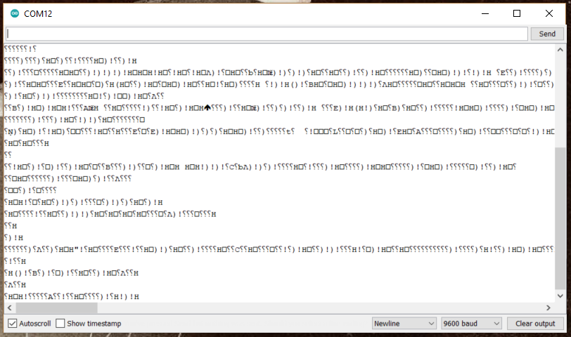
To fix this issue, the baud rate on the serial monitor was adjusted to match that specified in the code (115200 baud). The desired output was then printed correctly. The changing loudest frequency value was observed when talking near the board and when loud vehicles would drive past the nearby window. The functionality of this code running on the hardware was further tested using a tone generator found online. This can be seen in the video below where it can be observed that the program detects a range of frequencies reasonably well.
By watching the Loudest Frequency value change while whistling was attempted, an approximate whistle frequency range was determined to be 750Hz to 1500Hz. The “Example1_MicrophoneOutput” code was slightly modified to light the LED when whistling was detected. This was accomplished by first adding the following line to the setup function to set the LED pin to be an output.
pinMode(LED_BUILTIN, OUTPUT); // initialize digital pin LED_BUILTIN as an output
Then in the function that prints the loudest frequency, before printing, the frequency is checked to see if it is in the whistle range, and if so, the LED is turned on and a message is printed indicating that a whistle was detected. Otherwise, the LED is turned off, and the normal message is printed. This was accomplished with the following lines of code:
if(ui32LoudestFrequency>750 && ui32LoudestFrequency<1500) // if sound is in my whistle range
{
digitalWrite(LED_BUILTIN, HIGH); // turn the LED on (HIGH is the voltage level)
Serial.printf("Loudest frequency: %d WHISTLE DETECTED\n", ui32LoudestFrequency);
}
else
{
digitalWrite(LED_BUILTIN, LOW); // turn the LED off by making the voltage LOW
Serial.printf("Loudest frequency: %d \n", ui32LoudestFrequency);
The operation of this code can be seen in the video below. The video also shows that the Artemis board is operating with power from the battery instead of the USB cable.
Part B: Virtual Machine Setup
A virtual machine was added to VirtualBox by copying the provided OVA file. The image below shows the VirtualBox manager window with the virtual machine to be used in this class selected. The preview window in the image also shows the desktop of the virtual machine to which a Guest Additions CD Image and a shared folder have been added.
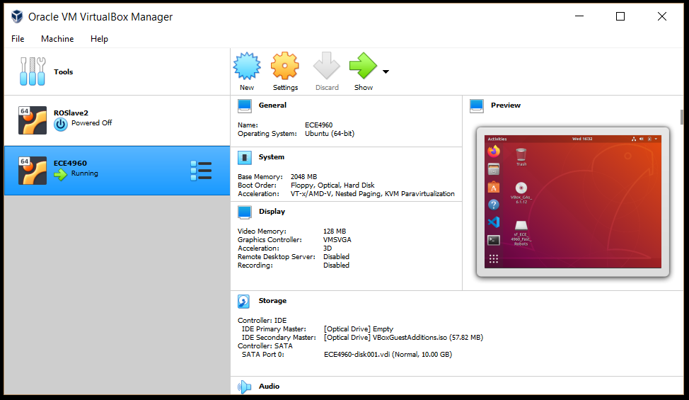
Lab 02
Abstract
In this lab, bluetooth communication was established between my computer and the artemis board. This came with a large number of challenges, and the host OS had to be used instead of the virtual machine. However, a connection was established, and data was able to be transferred.
Connecting to the Artemis Board
The first few times main.py was run in the virtual machine the following error appeared:
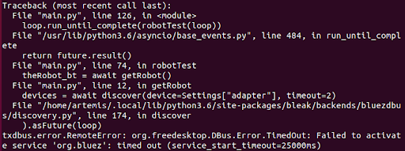
Then, after unplugging and plugging back in the bluetooth adapter several times, the following error message was printed:
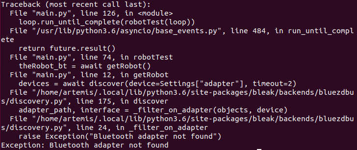
The VM was restarted twice, the USB bluetooth adapter was moved to a different port on the PC, and the board was able to be found. In settings.py, the MAC address was added to Settings["cached"]. When this was done, and main.py was run again, the LED on the Artemis board would blink on and off indicating that a connection had been made.
Around this point, the Artemis board began to act unresponsive after restarting and was found to be getting stuck on line 136 of the distributed Arduino sketch. This issue fixed itself some time later for no apparent reason, then began acting up the next day only to fix itself again.
Additionally, at this point running main.py resulted in the following error message.
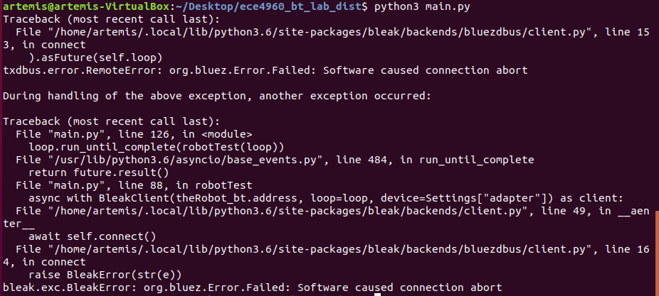
This error could not be diagnosed, and the rest of the lab was done on the host machine (Windows 10).
After downloading Python and Bleak on the host OS, main.py was run in the command prompt window. The following errors were found most times the script was run, but after several runs, the board connected. This inconsistency persisted through the rest of the lab.
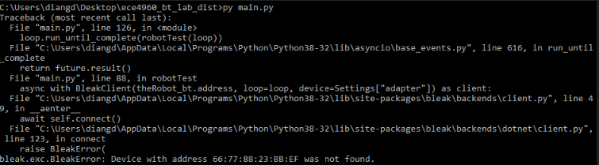
Pinging the Robot
In main.py, pass was commented out and await theRobot.ping() was uncommented. Then main.py was run and the output was observed in the terminal. The terminal displayed round trip times, about 850 of these recorded times were copied and can be seen in the histogram below.
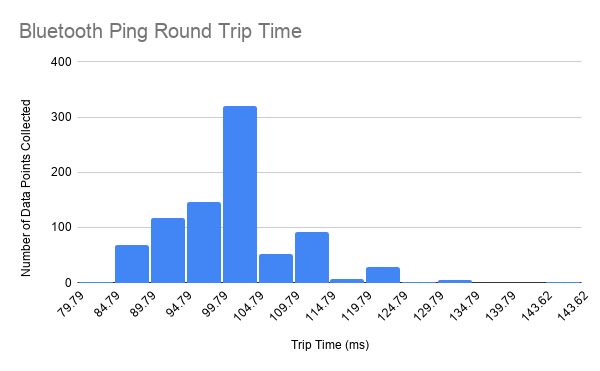
It can be seen that the largest group of pings took around 100-105ms. The times ranged from 79.8 to 143.6ms and the average time was 101.25ms. The line amdtpsSendData(m_Rcvd, l_Rcvd); in the PING case shows that l_Rcvd is the length of the data being transmitted in the ping. The sketch was modified so that l_Rcvd would be printed in the serial monitor, and it was found to be 99. Therefore, the ping transfers 99 bytes. From this, it was calculated that on average the bluetooth transmission was about 15643 bits per second. This is significantly lower than the serial transmission used in this lab of 115200 baud (115200 bits/sec).
Requesting a Float
In main.py, await theRobot.ping() was commented out and await theRobot.sendCommand(Commands.REQ_FLOAT) was uncommented. Then the REQ_FLOAT case in the Arduino sketch was changed to the following:
case REQ_FLOAT:
Serial.println("Going to send a float");
//TODO: Put a float (perhaps pi) into a command response and send it.
res_cmd->command_type = GIVE_FLOAT; //set command type as GIVE_FLOAT
res_cmd->length=6; //length doesn't matter since the handler will take care of this
((float *)(res_cmd->data))[0] = 1.23f; //put a float into data to send
amdtpsSendData((uint8_t *)res_cmd, 6); //2 bytes for type and length, 4 bytes of data
break;
When run, the terminal showed the following output:
The float displayed on the screen didn’t exactly match the float that was sent (1.23). This shows that data transmission over bluetooth isn’t perfect, and if floats are to be compared, the comparisons may not be accurate if the data was transmitted over bluetooth.
Testing the Data Rate
To transmit data, the following code was added to the main loop in the arduino sketch:
if (bytestream_active)
{
res_cmd->command_type = BYTESTREAM_TX; //set command type to bytestream transmit
res_cmd->length = 14; //length doesn't matter since the handler will take care of this
//TODO: Put an example of a 32-bit integer and a 64-bit integer
//for the stream. Be sure to add a corresponding case in the python program.
//Serial.printf("Stream %d \n", bytestream_active);
((uint32_t *)(res_cmd->data))[0] = 32; //put a 32 bit integer into data to send (4 bytes)
uint64_t num = 64;
memcpy(res_cmd->data+4, &num, 8); //put a 64 bit integer into data to send (8 bytes)
// send a little data
//amdtpsSendData((uint8_t *)res_cmd, 14); //2 bytes for type and length, 12 bytes of data
// send a lot of data
uint64_t num2 = 65;
memcpy(res_cmd->data+12, &num2, 8); //put a 64 bit integer into data to send (8 bytes)
uint64_t num3 = 66;
memcpy(res_cmd->data+20, &num3, 8); //put a 64 bit integer into data to send (8 bytes)
uint64_t num4 = 67;
memcpy(res_cmd->data+28, &num4, 8); //put a 64 bit integer into data to send (8 bytes)
uint64_t num5 = 68;
memcpy(res_cmd->data+36, &num5, 8); //put a 64 bit integer into data to send (8 bytes)
uint64_t num6 = 69;
memcpy(res_cmd->data+44, &num6, 6); //put a 64 bit integer into data to send (8 bytes)
uint64_t num7 = 70;
memcpy(res_cmd->data+52, &num7, 8); //put a 64 bit integer into data to send (8 bytes)
uint64_t num8 = 70;
memcpy(res_cmd->data+60, &num8, 8); //put a 64 bit integer into data to send (8 bytes)
amdtpsSendData((uint8_t *)res_cmd, 70); //2 bytes for type and length, 68 bytes of data
//Print time
unsigned long t = micros();
Serial.printf("Package %d sent at %d us \n", pkg_count, t);
pkg_count++;
}
In addition to this code, bytestream_active was set to 1 in the START_BYTESTREAM_TX case, and pkg count was initialized as a global variable with a value of 0. As it appears, the above code transmits a byte stream of one 32-bit integer and eight 64-bit integers (70-byte command), but if the line under // send a little data is uncommented and the 15 lines under // send a lot of data are commented out, the code will instead only transmit one 32 bit integer and one 64 bit integers (14-byte command). This code also has the board serial print every time a package is sent along with the time that it was sent.
In main.py, await theRobot.sendCommand(Commands.START_BYTESTREAM_TX) was added to myRobotTasks and all other commands were commented out. Additionally the following lines were added to the simpleHandler function:
if (code == Commands.BYTESTREAM_TX.value):
print(unpack("<Iqqqqqqqq", data)) #unpacks 1 4-byte int and 8 8-byte int
The code above would print the package sent for the 70 byte command case. For the 14-byte case, "<Iq" was used as the format string to indicate that data only includes one 4-byte number and one 8-byte number.
When the code was run for the 70-byte case, the output on the serial monitor and command line window looked like the following image.
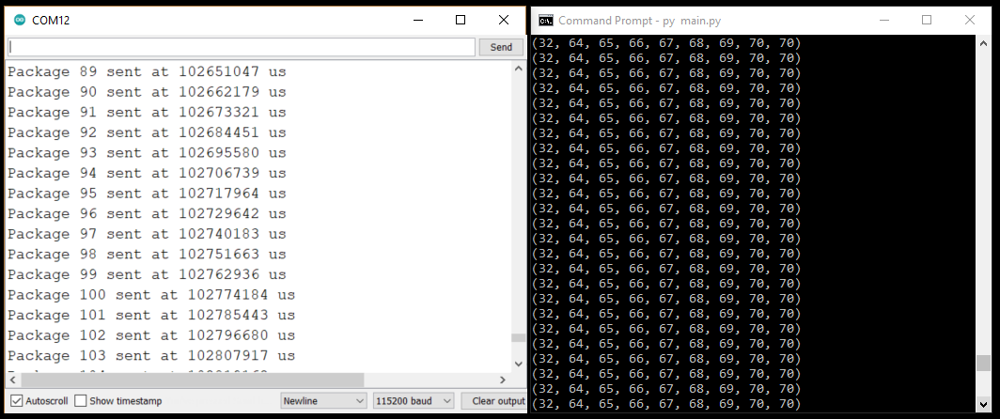
From testing the code for both package cases, the histograms below were made for the amount of time that passed between each package being sent.
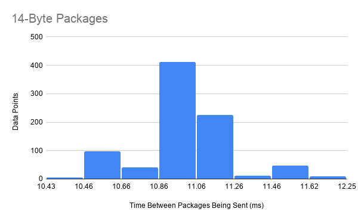
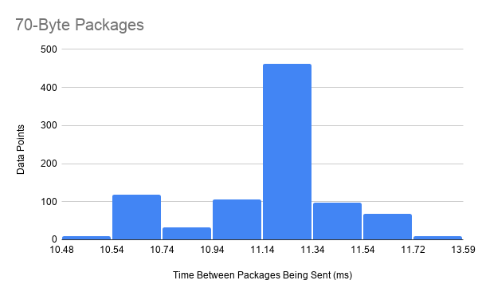
It can be seen that the largest amount of measurements of time was between 10.86 and 11.06ms for the smaller package, and between 11.14 and 11.34ms for the larger package. On average, the 14-byte packages were sent every 11.03ms and the 70-byte packages were sent every 11.16ms. This indicates that the larger packages sent slightly slower. For the 14-byte test, 932 packages were sent, but the terminal only printed 811 of them indicating that about 13% of them were dropped. For the 70-byte test, 904 packages were sent, but the terminal only printed 766 of them indicating that about 15% of them were dropped.
Lab 03
Abstract
In this lab, several observations, measurements, and calculations were made for both the physical remote control car and the simulated robot.
Part A: Characterizing the Car
Dimensions
Several dimensions were measured at least four times using a pair of digital callipers. The dimensions measured can be found in the image below.
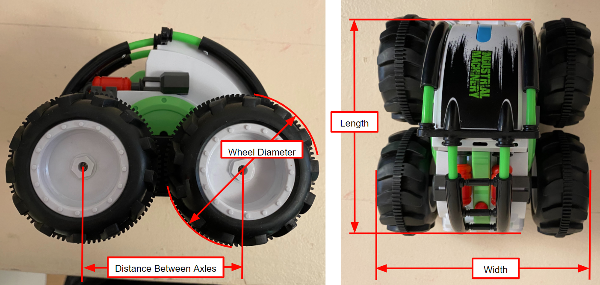
The averaged measurements were:
Wheel Diameter: 77.4 mm
Distance Between Axle Centers: 80.0 mm
Width: 139.1 mm
Length: 145.8 mm
These dimensions may be useful when coming up with a model for the platform. The most useful dimension is most likely the wheel diameter which can be used to determine distance the car will travel per revolution as well as the tangential force that torque on the wheels will cause.
Backlash
The backlash of the gear train driving the wheels was measured by marking one of the little treads on one wheel with a pencil, and holding that wheel fixed so that the marked tread is the closest to the other wheel. Then the other wheel was turned as far as possible in one direction without straining the system. Then the tread on the turned wheel closest to the already marked tread was also marked. The turned wheel was then turned the opposite direction in a similar manner. From this position, the number of treads between the turning wheels starting and final position were counted. This is diagrammed in the figure below.
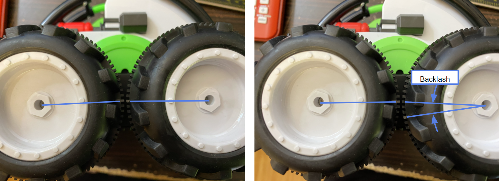
From the knowledge that each wheel has 92 little treads, it was calculated from 4 trials that the backlash is approximately 11.7 degrees. This measurement can only be seen as approximate because of the amount of play in the system and how easily the plastic bent. Knowing that this much backlash exists in the system will be useful since it will add some mechanical delay between the motor turning and the wheels turning.
Wheel Speed
The speed of the car’s wheels was measured using a slow-motion camera. This was done by securing the car in place, putting tape on one wheel, and comparing that piece of tape’s position to the position of a stationary piece of tape. A computer with a stopwatch was also placed in the camera’s field of view. The setup for this test can be seen below.
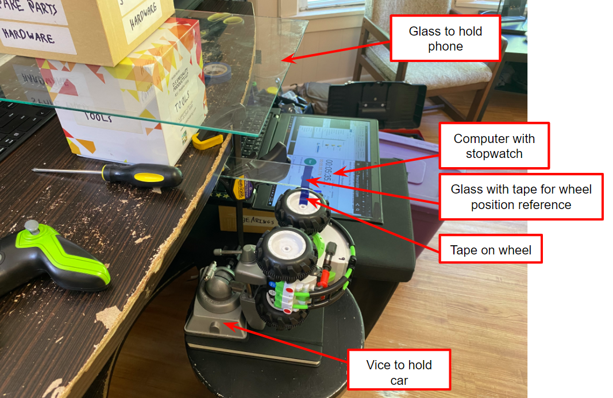
Slow-motion videos were recorded of both the right and left wheels spinning forward and backwards in both “speedy” and “slowly” modes. These videos can be seen below.
The speed was calculated by using the stopwatch to find the time for the wheel to fully rotate 4 times and averaging the values calculated from two sets of rotations for each case. The rotations chosen were several seconds after the start, and several seconds before the stop of the control input to ensure that the spinning was steady-state. The spinning speed was found to be about 12.9 rev/s in “Slowly” mode and 14.4 rev/s in “Speedy” mode. Although the wheels will turn slower when actually moving the car due to friction and the added load of the car’s weight, this speed can be used to approximate the max speed the car could go.
Tricks and Performance
Having the car go at full speed in one direction, and then quickly switching the direction momentarily results in the car doing a forward roll as seen in the video below.
The car was found to turn reasonably well around its center. The video below shows the car turning in a roughly 9 inch circle of electrical tape in both “speedy” and “slowly” modes.
It can be seen that the car can stay in the circle for at least one or two rotations. It tended to drift off to the right, but upon further inspection of the floor, it was found to be slightly inclined. This test shows that an approximation of the car turning about its axis like a unicycle-robot model could be accurate.
Summary
The values measured and calculated are tabulated below.
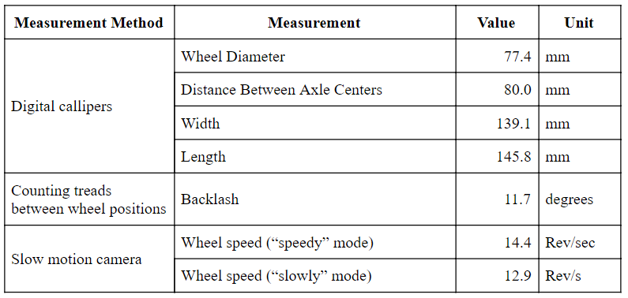
Part B: Characterizing the Virtual Robot
All of the steps were followed to install software dependencies, set up the base code, start the simulator, and start the keyboard teleoperation tool. Only one small error was encountered. This error can be found in the picture below and was corrected by simply running the command given in the error message.
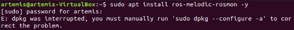
The teleop commands were used to move the robot around. This can be seen in the video below in which the speed is adjusted and the robot is driven around.
The video shows the following aspects of the simulation environment:
When the robot collides with a wall a warning triangle appears over the robot, and it stops moving
Teleoperation works from the perspective view
The robot could be dragged and dropped with the cursor
when the robot is placed outside of the maze area and is driven out of the workspace, the workspace extends
There didn't seem to be lower limits on the speed of the robot as the values could be changed to be arbitrarily small in the terminal and the robot would just move slower and slower. However, the robot seemed to have an upper limit on the linear and angular speed as the value could be increased in the terminal, but the robot would stop accelerating at a certain point. This max speed was measured using the video below in which the input speeds were made very large and the robot was driven straight and rotated.
By looking at the robot pose and the clock at various times, the maximum linear speed was calculated to be 1 unit/sec and the maximum angular speed was calculated to be 90 deg/sec.
Lab 04
Abstract
In this lab, the Artemis board was connected to the motors of the car through the motor driver and open loop control was implemented. Open loop control was also explored in the simulation environment.
Part A: Hardware Open Loop Control
The artemis board was connected to the motor driver, and “Example1_wire” was run to find the address of the driver. The address was found to be 0x5D which matches the the default address shown on Sparkfun’s website.
Taking apart the car involved four sets of screws. The locations of these screws is diagrammed below.
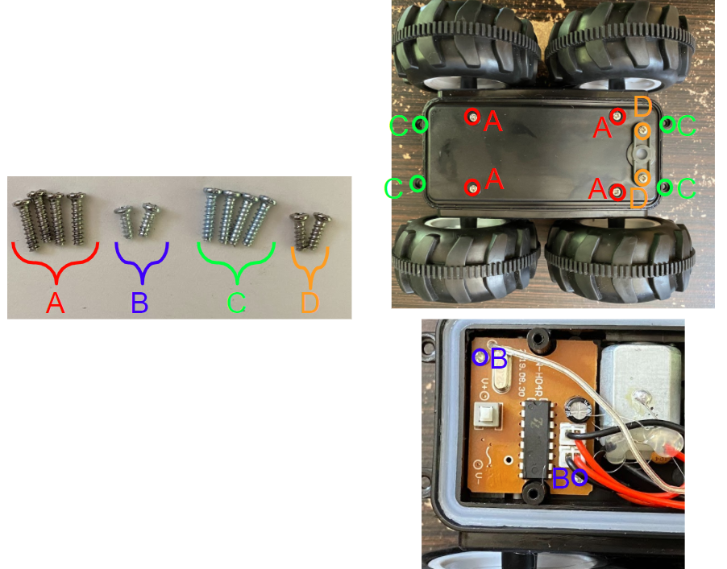
Instead of cutting the power cables from the control PCB like some kind of barbarian, I desoldered them.
To route the Qwiic connector cable from inside the car to the artemis board, the hole where the power button was actuated through was drilled out to a 5/16th inch hole. This hole can be seen below.
The motor driver was connected to the motors and battery and its placement inside the car can be seen below.
The gray cover for the button piece was cut in half and put over the drilled hole to keep a classy look. The Artemis Board and its battery were then taped to the outside of the car to keep them temporarily secured, but still easily accessible. The assembled car can be seen below.
The examples\MotorTest code was modified for use in this lab. The I2C address in the code was changed to match that of the motor driver.
The minimum value for which the motors would turn was found by using the code below and seeing on the serial window at what input the wheels started to turn.
//set motor constants
#define L_MOTOR 0
#define R_MOTOR 1
#define FWD 0
#define REV 1
void loop()
{
//***** Operate the Motor Driver *****//
// It uses .setDrive( motorName, direction, level ) to drive the motors.
for (int i = 50; i < 70; i++)
{
Serial.printf("Right Side, current input: %d\n", i);
myMotorDriver.setDrive( R_MOTOR, FWD, i);
delay(1000);
}
myMotorDriver.setDrive( R_MOTOR, FWD, 0);
for (int i = 50; i < 70; i++)
{
Serial.printf("Left Side, current input: %d\n", i);
myMotorDriver.setDrive( L_MOTOR, FWD, i);
delay(1000);
}
myMotorDriver.setDrive( L_MOTOR, FWD, 0);
}
The wheels were found to turn at rather inconsistent values, but by averaging several values, the wheels were found to turn around an input of 59 (σ=1.2) for the left side, and 54 (σ=2.0) for the right side. This of course is dependent on how fresh the battery is, and with a slightly used battery the values were found to be 64 (σ=4.0) and 59 (σ=1.2). It was also found that both wheels would turn at much lower inputs if given a little nudge. The important takeaway here is that inputs below 70 should probably be avoided unless the wheels are already turning in that direction.
The following lines were found on the Sparkfun page and added to the setup code so that the motors would have the same forward direction.
// motor 1 inversion so that forward is the same for both motors
while ( myMotorDriver.busy() ); //Waits until the SCMD is available.
myMotorDriver.inversionMode(1, 1); //invert motor 1
Then the code below was written to test how straight the car drives.
//set motor constants
#define L_MOTOR 0
#define R_MOTOR 1
#define FWD 0
#define REV 1
void loop()
{
//***** Operate the Motor Driver *****//
// It uses .setDrive( motorName, direction, level ) to drive the motors.
//Set both motors going forward at a medium speed for some time
myMotorDriver.setDrive( L_MOTOR, FWD, 100);
myMotorDriver.setDrive( R_MOTOR, FWD, 100);
delay(2400);
//Turn off both motors
myMotorDriver.setDrive( L_MOTOR, FWD, 0);
myMotorDriver.setDrive( R_MOTOR, FWD, 0);
while(1); //stop after one run
}
The following video shows the above code running when the car is placed on a straight piece of tape that has perpendicular pieces of tape that indicate 6 feet.
It can be seen that at the end of 6 feet, the car is consistently still partially overlapping with the tape. This shows that the car can go pretty straight without a calibration factor.
The code below was then written to demonstrate open loop control.
for (int i = 0; i < 4; i++) //run through these commands 4 times
{
//drive forward for a bit
myMotorDriver.setDrive( L_MOTOR, FWD, 80);
myMotorDriver.setDrive( R_MOTOR, FWD, 80);
delay(1000);
//Turn Right for a bit
myMotorDriver.setDrive( L_MOTOR, FWD, 200);
myMotorDriver.setDrive( R_MOTOR, REV, 200);
delay(1500);
//drive backward for a bit
myMotorDriver.setDrive( L_MOTOR, REV, 100);
myMotorDriver.setDrive( R_MOTOR, REV, 100);
delay(800);
//Turn Left for a bit
myMotorDriver.setDrive( L_MOTOR, REV, 200);
myMotorDriver.setDrive( R_MOTOR, FWD, 200);
delay(1000);
}
// stop motors
myMotorDriver.setDrive( L_MOTOR, REV, 0);
myMotorDriver.setDrive( R_MOTOR, REV, 0);
while(1); //stop
The code includes commands to drive and turn in all directions at various speeds for various times. The code running on the robot can be seen in the video below.
Part B: Simulation Open-Loop Control
Before starting this part, the VM hard disk space was expanded to 16 GB, and the provided Jupyter Lab tutorial was followed.
The base code was set up, and the Jupyter Lab Notebook was started. By running all of the code blocks in the notebook and playing around with the code in the Move the Robot section, the basic function of the Robot class was understood.
The following code was written to have the robot follow a roughly rectangular loop.
steps = 12 # number of steps to take (3 times around the square)
step = 0 # current step
while step < steps:
#rotate at 90deg/sec for 1 second
robot.set_vel(0,1.5708) # rotate
time.sleep(1)
#go foward for a bit
robot.set_vel(.5,0)
time.sleep(2)
#stop robot
robot.set_vel(0,0)
The code works by having the robot turn at 90 deg/sec for 1 second to turn a right angle, and then going forward for two seconds. By looping these two commands, a square path was created. This operation assumes that the angular velocity control is the exact speed that the robot moves. This wouldn’t work as well on a physical system, since the angular velocity couldn’t be controlled with such accuracy.
The operation of the code can be seen in the video below.
Footprints were turned on so that the path would be more clear. It can be seen that the robot follows a very square path.
Lab 05
Abstract
In this lab, the functionality of the proximity sensor and time of light sensor were explored. Then obstacle avoidance code was implemented on the physical and simulated robot.
Part A: Hardware Obstacle Avoidance
The following default I2C addresses were found on the datasheets for the two sensors used in this lab:
VCNL4040 Proximity Sensor: 0x60
VL53L1X Time of Flight (ToF) Sensor: 0x52
The proximity sensor has a range of 0-200mm with no dead zone and SparkFun claims that this sensor is better for detecting qualitative detection than distance measurements. The ToF sensor has a range of 40-400mm. Because of this, I plan on mounting both sensors on the front of the car and using the proximity sensor for distance measurements less than 4cm from the car, and the ToF sensor for all other distance measurements.
Because of this proposed setup, the robot will be unable to detect any objects not directly in front of it.
The following table discusses several distance sensors based on infrared transmission. This information in this table was found in the Lecture 3 Slides.
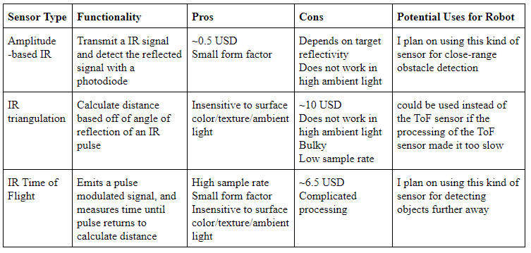
The Arduino library manager was used to uninstall the libraries for both sensors.
Proximity Sensor
By running Example1_wire the I2C address of the proximity sensor was found to be 0x60. This matches what is specified on the datasheet.
The image below shows the setup used to map the sensor readings to actual distances.
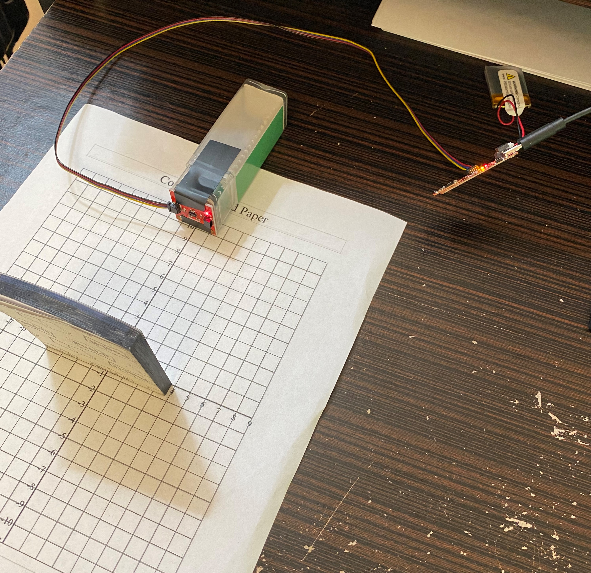
The items in the following image were used to test the proximity sensor. There is the box that the Artemis components came in that is shiny and red, a stack of post-it notes that is white and flat, and a book that has a black and bumpy cover.
The results from testing the sensor in two different lighting conditions can be found below. The first lighting condition was the normal amount of light I have in my apartment when working which I would expect to be the typical operating condition for the robot, and the second condition was with the lights off and blinds closed since the robot may end up under furniture where it is dark.
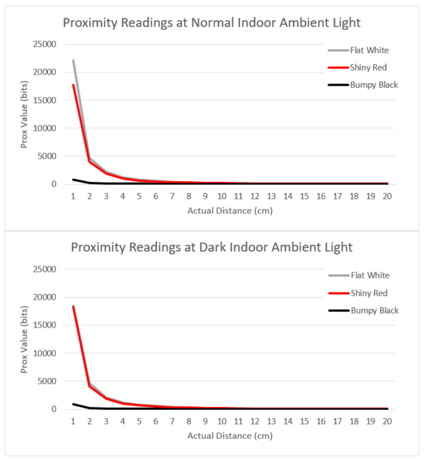
The black target resulted in the weakest measurements, and the lighting condition seemed to have very little effect on the results.
The main loop was changed to just be the following to find out how long it takes to read a value:
unsigned long t0 = micros(); // start time
unsigned int proxValue = proximitySensor.getProximity();
unsigned long delt = micros() - t0;
Serial.println(delt);
It was found that it takes about 630 μs (σ=0.76) to read the sensor value.
Time of Flight Sensor
By running Example1_wire the I2C address of the ToF sensor was found to be 0x29. This does not match the default specified on the datasheet, but the datasheet does specify that the address is programmable so it can be changed.
The ToF sensor was found to need calibration, so Example7_Calibration was run. It was found that this code didn’t work as provided. startRanging() and stopRanging() commands had to be added to the code that looks for a low distance to initialize the calibration. Once this was done, the calibration code worked.
Since the robot has a maximum speed around 2.7m/s as found in Lab 3, taking a distance reading every 55 ms would result in the robot having 15cm of space to react after seeing something. Because of the ToF sensor’s large range, this seemed like a reasonable range, so the timing budget was set to 50, and the inter measurement period was set to 5 with the following lines put into the setup code.
Based on the max speed of 2.7m/s it was determined that the robot could cover the max range distances in the following times:
Short (1.3m): 0.481s
Medium (3m): 1.11s
Long (4m): 1.48s
For the application of obstacle avoidance, half a second to react to an obstacle seemed sufficient, so the minimum distance mode was set so that the robot could get really close to obstacles:
distanceSensor.setDistanceModeShort();
When Example3_StatusAndRate was run, it was found that when an object would move rapidly in front of the sensor, the range status would change to Wrapped target fail and occasionally sigma fail. This means that the sensor measurements may not be as accurate when the car is going fast or there are fast moving obstacles around it.
The following code was used to test the sensor:
void setup(void)
{
Wire.begin();
Serial.begin(115200);
Serial.println("VL53L1X Qwiic Test");
//VL53L1_SetInterMeasurementPeriodMilliSeconds(&VL53L1Dev, 1000 );
if (distanceSensor.begin() != 0) //Begin returns 0 on a good init
{
Serial.println("Sensor failed to begin. Please check wiring. Freezing...");
while (1)
;
}
Serial.println("Sensor online!");
distanceSensor.setTimingBudgetInMs(50);
distanceSensor.setIntermeasurementPeriod(5);
distanceSensor.setDistanceModeShort();
distanceSensor.startRanging(); //just continue ranging the whole time to save time
}
void loop(void)
{
long startTime = millis();
while (!distanceSensor.checkForDataReady())
{
delay(1);
}
int distance = distanceSensor.getDistance(); //Get the result of the measurement from the sensor
distanceSensor.clearInterrupt();
long endTime = millis();
Serial.print("Distance(mm): ");
Serial.print(distance);
float distanceInches = distance * 0.0393701;
float distanceFeet = distanceInches / 12.0;
Serial.print("\tDistance(ft): ");
Serial.print(distanceFeet, 2);
Serial.print("\tRanger time: ,");
Serial.print((float)(endTime - startTime), 2);
Serial.println();
}
The time for one ranger measurement was found, on average, to be 44.9ms (σ=1.18).
By using a similar setup to that used for the proximity sensor, data was found for a range of distances. This time instead of using the white post-it notes, the gray target that came with the kit was used. This was only done in normal lighting conditions. The data is plotted below.
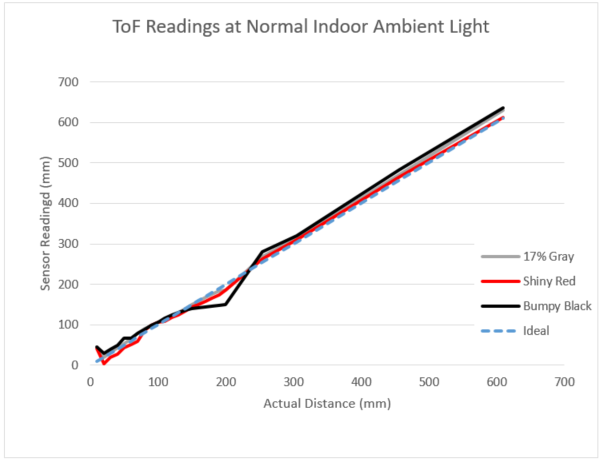
The sensor was fairly accurate between 40 and 600mm the worst measurement was found to be 13% off of the true value for the gray target, 16% for the red target, and 32% for the black target. Once again, the black, bumpy target results in the worst data.
To test the range capabilities with these settings, the sensor was pointed at a wall and moved away from it until it was no longer able to take readings (returned 0 instead of a value). With these settings this occurred around 2.06m.
Obstacle Avoidance
To mount the sensors on the car, a cardboard “bumper” was made for the front of the car. Another cardboard “bumper” was made for the back of the car which has a slot to hold the Artemis Board’s battery. These Cardboard components can be seen below.
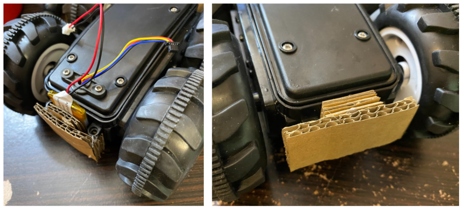
The car assembled with the sensors can be seen below.
It was found that the ToF sensor would occasionally detect the floor and think it was an obstacle, so some tape was added to slightly angle the sensors upwards:
The following code was written to test how fast the robot could go and still stop before hitting an obstacle.
#include <Arduino.h>
#include <stdint.h>
#include "SCMD.h"
#include "SCMD_config.h" //Contains #defines for common SCMD register names and values
#include <ComponentObject.h>
#include <RangeSensor.h>
#include <SparkFun_VL53L1X.h>
#include <vl53l1x_class.h>
#include <vl53l1_error_codes.h>
#include <Wire.h>
#include "SparkFun_VL53L1X.h" //Click here to get the library: http://librarymanager/All#SparkFun_VL53L1X
//Optional interrupt and shutdown pins.
#define SHUTDOWN_PIN 2
#define INTERRUPT_PIN 3
SCMD myMotorDriver; //This creates the main object of one motor driver and connected slaves.
SFEVL53L1X distanceSensor;
//Uncomment the following line to use the optional shutdown and interrupt pins.
//SFEVL53L1X distanceSensor(Wire, SHUTDOWN_PIN, INTERRUPT_PIN);
void setup(void)
{
Serial.begin(115200);
//motor setup
myMotorDriver.settings.commInterface = I2C_MODE;
myMotorDriver.settings.I2CAddress = 0x5D; //config pattern is "1000" (default) on board for address 0x5D
myMotorDriver.settings.chipSelectPin = 10;
//*****initialize the driver get wait for idle*****//
while ( myMotorDriver.begin() != 0xA9 ) //Wait until a valid ID word is returned
{
Serial.println( "ID mismatch, trying again" );
delay(500);
}
Serial.println( "ID matches 0xA9" );
// Check to make sure the driver is done looking for slaves before beginning
Serial.print("Waiting for enumeration...");
while ( myMotorDriver.ready() == false );
// motor 1 inversion so that foward is the same for both motors
while ( myMotorDriver.busy() ); //Waits until the SCMD is available.
myMotorDriver.inversionMode(1, 1); //invert motor 1
while ( myMotorDriver.busy() );
myMotorDriver.enable();
// sensor setup
Wire.begin();
Serial.println("VL53L1X Qwiic Test");
//VL53L1_SetInterMeasurementPeriodMilliSeconds(&VL53L1Dev, 1000 );
if (distanceSensor.begin() != 0) //Begin returns 0 on a good init
{
Serial.println("Sensor failed to begin. Please check wiring. Freezing...");
while (1)
;
}
Serial.println("Sensor online!");
distanceSensor.setTimingBudgetInMs(50);
distanceSensor.setIntermeasurementPeriod(5);
distanceSensor.setDistanceModeShort();
distanceSensor.startRanging(); //just continue ranging the whole time to save time turning it on/off
}
//set motor constants
#define L_MOTOR 0
#define R_MOTOR 1
#define FWD 0
#define REV 1
void loop(void)
{
while (!distanceSensor.checkForDataReady())
{
delay(1);
}
int distance = distanceSensor.getDistance(); //Get the result of the measurement from the sensor
distanceSensor.clearInterrupt();
//Serial.print("Distance(mm): ");
//Serial.print(distance);
byte rangeStatus = distanceSensor.getRangeStatus();
if(rangeStatus==0) //only act if sensor reading was good
{
if(distance==0 || distance>300) //0 if there is no object nearby
{
//drive straight
myMotorDriver.setDrive( L_MOTOR, FWD, 125);
myMotorDriver.setDrive( R_MOTOR, FWD, 125);
}
else
{
// hit the breaks!
myMotorDriver.setDrive( L_MOTOR, REV, 255);
myMotorDriver.setDrive( R_MOTOR, REV, 255);
delay(300);
//stop motors
myMotorDriver.setDrive( L_MOTOR, REV, 0);
myMotorDriver.setDrive( R_MOTOR, REV, 0);
while(1); //wait for reset
}
}
//Serial.println();
}
Through trial and error, it was found that a control input of 125 was pretty much the fastest I could have the robot go without it just running into things and still respond relatively close to obstacles. To stop the robot, a brief reverse control input is applied to stop the robot from coasting.
The code running on the robot can be seen in the video below.
The robot can be seen to consistently stop itself before hitting the wall.
The main loop in the code above was changed so that when the robot detected an obstacle, it would stop turn, and continue going:
void loop(void)
{
while (!distanceSensor.checkForDataReady())
{
delay(1);
}
int distance = distanceSensor.getDistance(); //Get the result of the measurement from the sensor
distanceSensor.clearInterrupt();
//Serial.print("Distance(mm): ");
//Serial.print(distance);
byte rangeStatus = distanceSensor.getRangeStatus();
if(rangeStatus==0) //only act if sensor reading was good
{
if(distance==0 || distance>300) //0 if there is no object nearby
{
myMotorDriver.setDrive( L_MOTOR, FWD, 120);
myMotorDriver.setDrive( R_MOTOR, FWD, 120);
}
else
{
// hit the breaks
myMotorDriver.setDrive( L_MOTOR, REV, 225);
myMotorDriver.setDrive( R_MOTOR, REV, 225);
delay(200);
//turn
myMotorDriver.setDrive( L_MOTOR, FWD, 200);
myMotorDriver.setDrive( R_MOTOR, REV, 200);
delay(300);
}
}
}
This code can be seen running in the following video.
The robot does a pretty good job at detecting and avoiding large objects, but when there are narrower objects or objects that aren’t directly in front of it, it doesn't detect them, and sometimes runs into them.
In an attempt to get the robot to detect narrower obstacles, the proximity sensor reading was added to the object detection code as follows.
void loop(void)
{
while (!distanceSensor.checkForDataReady())
{
delay(1);
}
int distance = distanceSensor.getDistance(); //Get the result of the measurement from ToF sensor
unsigned int proxValue = proximitySensor.getProximity(); //Get result from prox sensor
distanceSensor.clearInterrupt();
/*
Serial.print("Distance(mm): ");
Serial.print(distance);
Serial.print("\tProx: ");
Serial.print(proxValue);
Serial.print("\n");
*/
byte rangeStatus = distanceSensor.getRangeStatus();
if(rangeStatus==0) //only act if sensor reading was good
{
if((distance==0 || distance>300) && proxValue<20) //0 if there is no object nearby
{
myMotorDriver.setDrive( L_MOTOR, FWD, 120);
myMotorDriver.setDrive( R_MOTOR, FWD, 120);
}
else
{
// hit the breaks
myMotorDriver.setDrive( L_MOTOR, REV, 225);
myMotorDriver.setDrive( R_MOTOR, REV, 225);
delay(200);
//turn
myMotorDriver.setDrive( L_MOTOR, FWD, 200);
myMotorDriver.setDrive( R_MOTOR, REV, 200);
delay(300);
}
}
Appropriate setup for the proximity sensor was also added to the code. This addition did not make a dramatic difference on the robot's obstacle avoidance, and its operation can be seen as slightly improved from before in the following video.
Given more time, further experimentation could have been done on where the sensors are placed on the robot as well as tuning of the speed and detection threshold values to improve the robot's performance.
Part B: Simulation Obstacle Avoidance
The same setup process used in the previous lab was used to set up the simulation and jupyter notebook.
To have the simulated robot avoid obstacles code was written to have the robot go forward until it is close to an obstacle, turn, and then continue moving forward. This code can be seen below.
def perform_obstacle_avoidance(robot):
turn_dir = 1
while True:
# Obstacle avoidance code goes here
dist = robot.get_laser_data() # find distance measurement
while(dist>0.3):
robot.set_vel(0.7,0) # drive foward while there is no close obstacle
turn_dir = -turn_dir # keep fliping sign of turn direction to get more random paths
dist = robot.get_laser_data() # find distance measurement
# turn 90 deg when object is detected
robot.set_vel(0,turn_dir*1.5708) # rotate at 90 deg/sec
time.sleep(1) # continue rotating for 1 sec
perform_obstacle_avoidance(robot)
The code has the robot turn at 90 degree angles because it was found that if the robot stays perpendicular or parallel to the walls is much less likely to collide with them. When smaller angle turns were made collisions were found to occur when the robot would be driving nearly parallel to a wall, and slowly crash into it. The code I wrote also has a variable turn_dir that controls the sign of the angular speed command given to the robot. This variable is continuously flipped between +1 and -1 when the robot is going forward. The result of this is that when the robot detects that it is close to an obstacle, it will turn in an approximately random direction. This was implemented so that the robot doesn’t just get stuck in a boring rectangular pattern.
Through trial and error it was found that a linear speed of 0.7 and sensor distance to stop going forward of 0.3 result in the robot going as fast as possible and getting as close to the walls as possible while consistently avoiding collisions. For linear speed of 0.8 or distance of 0.2. The robot was found to crash. The operation of the code can be seen in the following video.
It can be seen that the robot does a good job of avoiding collisions for a decent amount of time. However it was found that given enough time, the robot drifts away from the desired horizontal and vertical directions and crashes as seen at the end of the video.
Lab 06
Abstract
Part A: IMU, PID, and Odometry
Setting up the IMU
By running Example1_wire the I2C address of the proximity sensor was found to be 0x69. This matches what is specified onSparkfun’s website.
The Example1_Basics code was run to observe the change in sensor values. When still, the acceleration was found to return about 1000mg for whichever axis was vertical, and around 0mg for the other two axes. When moving back and forth, the accelerometer values would change. When rotating the gyroscope values would change from the nearly zero values that they rest when not moving.
Accelerometer
The main loop of Example1_Basics was changed to the following to print the pitch and roll values calculated from the accelerometer. math.h was included, and global variables were defined for pitch and roll.
void loop() {
if( myICM.dataReady() ){
myICM.getAGMT(); // The values are only updated when you call 'getAGMT'
pitch_a = atan2(myICM.accX(),myICM.accZ())*180/M_PI;
Serial.print("\nPitch = ");
printFormattedFloat( pitch_a, 3, 2 );
roll_a = atan2(myICM.accY(),myICM.accZ())*180/M_PI;
Serial.print(",\tRoll = ");
printFormattedFloat( roll_a, 3, 2 );
delay(30);
}
else{
Serial.println("Waiting for data");
delay(500);
}
}
The table below shows the accelerometer positioning and sample readings for rolls and pitches of -90°, 0°, and 90°.
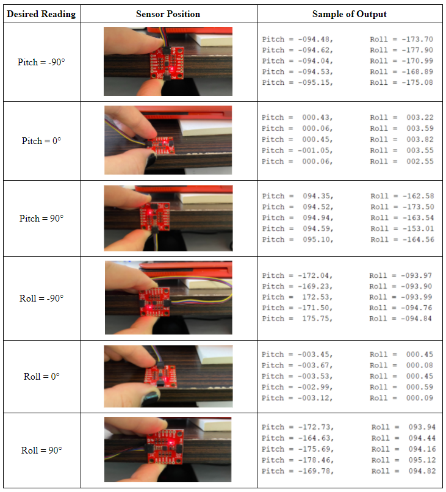
It can be seen that the measured values were always within 6° of the expected values of ±90° and within 2° of the expected values of 0°. This shows that the readings are fairly accurate, and should be good enough for use without calibration (especially with the uncertainty associated with the levelness of my desk).
To collect data from the sensor being tapped the following code was written to print the x acceleration.
void loop() {
unsigned long t0 = micros(); // start time
if( myICM.dataReady() ){
myICM.getAGMT(); // The values are only updated when you call 'getAGMT'
printFormattedFloat( myICM.accX(), 5, 3 );
Serial.print(",");
unsigned long delt = micros() - t0;
printFormattedFloat( delt, 5, 2 ); // print time between measurements to approximate sampling frequency
Serial.print("\n");
}
else{
Serial.println("Waiting for data");
delay(500);
}
}
Since I don’t currently have a python IDE installed on my computer, I used MATLAB to plot the frequency response of the accelerometer being tapped several times. The MATLAB code is copied below, and the frequency response plot is below that.
data = table2array(readtable('tap_data.csv'));
Ts = mean(data(:,2))*(10^-6); % average sampling time in seconds
Fs = 1/Ts; % sampling frequency
X = data(:,1); % accelerometer data
% plot(X) % check raw data
% X = X(1:end); %trim data
L = length(X); % Length of data
Y = fft(X); % compute Fourier Transform
% Compute the two-sided spectrum P2. Then compute the single-sided spectrum P1 based on P2 and the even-valued signal length L.
P2 = abs(Y/L);
P1 = P2(1:L/2+1);
P1(2:end-1) = 2*P1(2:end-1);
f = Fs*(0:(L/2))/L; % frequency vector
plot(f,P1)
title('Single-Sided Amplitude Spectrum of X(t)')
xlabel('f (Hz)')
ylabel('|P1(f)|')
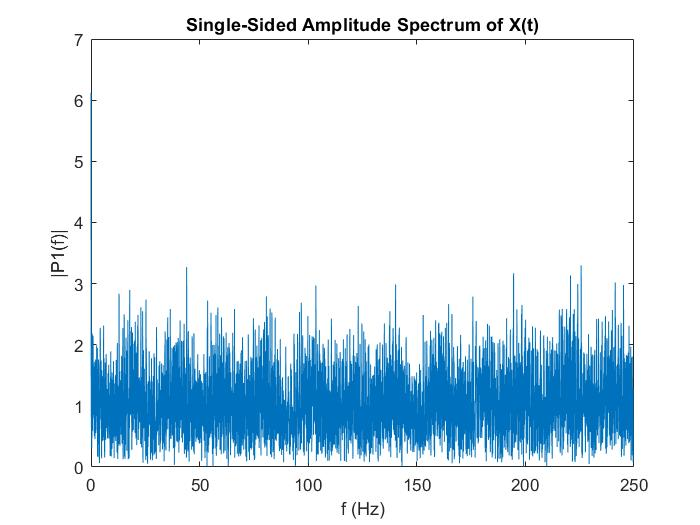
Although the plot is very noisy, several of the highest peaks are seen to occur at frequencies higher than 190Hz. Using a low-pass filter with a frequency around here should eliminate some of the sensor noise. For the LPF, ⍺ was calculated to be around 0.9 from the equations given in class. The LPF was implemented with the following code.
if( myICM.dataReady() ){
myICM.getAGMT(); // The values are only updated when you call 'getAGMT'
pitch_a = atan2(myICM.accX(),myICM.accZ())*180/M_PI;
Serial.print("\n");
Serial.print(pitch_a);
Serial.print("\t");
pitch_a_LPF = alpha*pitch_a+(1-alpha)*old_pitch_a;
old_pitch_a = pitch_a_LPF;
Serial.print(pitch_a_LPF);
Serial.print("\t");
roll_a = atan2(myICM.accY(),myICM.accZ())*180/M_PI;
Serial.print(roll_a);
Serial.print("\t");
roll_a_LPF = alpha*roll_a+(1-alpha)*old_roll_a;
old_roll_a = roll_a_LPF;
Serial.print(roll_a_LPF);
Serial.print("\t");
delay(30);
}
The alpha value of 0.9 was found to not really reduce the noise in the signal, so the value was lowered to 0.3 which did a much better job of making the signal smooth. However, this also made the measurement lag a little more. Some sample data from the serial plotter can be found below. The filtered readings (red and yellow) are significantly less noisy.
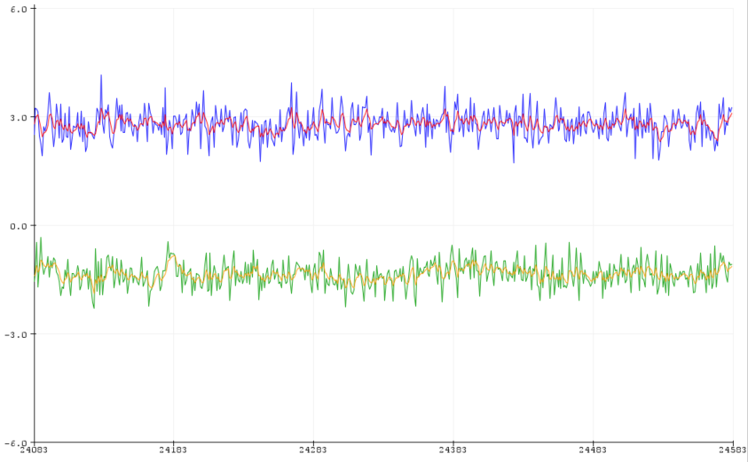
Gyroscope
Code was added to calculate roll, pitch and yaw with the gyroscope:
if( myICM.dataReady() )
{
t0 = micros();
myICM.getAGMT(); // The values are only updated when you call 'getAGMT'
Serial.print("\n");
//---------------------roll---------------------
roll_a = -atan2(myICM.accY(),myICM.accZ())*180/M_PI;//flip sign to be consistent with gyro data
Serial.print(roll_a);
Serial.print("\t");
roll_a_LPF = alpha*roll_a+(1-alpha)*old_roll_a;
old_roll_a = roll_a_LPF;
Serial.print(roll_a_LPF);
Serial.print("\t");
roll_g = roll_g-myICM.gyrX()*(float)dt/1000000;
Serial.print(roll_g);
Serial.print("\t");
//---------------------pitch---------------------
pitch_a = atan2(myICM.accX(),myICM.accZ())*180/M_PI;
Serial.print(pitch_a);
Serial.print("\t");
pitch_a_LPF = alpha*pitch_a+(1-alpha)*old_pitch_a;
old_pitch_a = pitch_a_LPF;
Serial.print(pitch_a_LPF);
Serial.print("\t");
pitch_g = pitch_g-myICM.gyrY()*(float)dt/1000000;
Serial.print(pitch_g);
Serial.print("\t");
//---------------------yaw---------------------
yaw_g = yaw_g-myICM.gyrZ()*(float)dt/1000000;
Serial.print(yaw_g);
*/
delay(30);
dt = (micros()-t0); //step size in microseconds
}
The plots below show a comparison between the accelerometer pitch reading (blue), the filtered accelerometer pitch reading (red), and the gyroscope reading (green). The plot on the left shows the results when the sensor isn't moved and the plot on the right shows the results when the sensor is rotated.
The gyroscope gives a much less noisy reading, but drifts significantly. Similar results were obtained for roll:
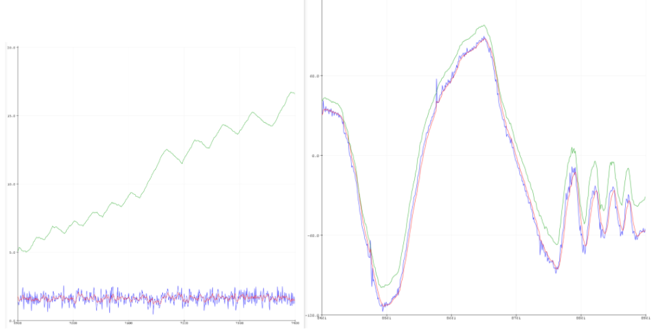
Changing the sampling frequency did not seem to have a significant effect on the measured values. I would attribute this to the way I calculate the step size in my code based on whatever step size actually occurs.
A complimentary filter was implemented to fuse the two sensor readings:
if( myICM.dataReady() ){
t0 = micros();
myICM.getAGMT(); // The values are only updated when you call 'getAGMT'
Serial.print("\n");
//---------------------roll---------------------
roll_a = -atan2(myICM.accY(),myICM.accZ())*180/M_PI;//flip sign to be consistent with gyro data
roll_a_LPF = 0.2*roll_a+(1-0.2)*old_roll_a;
old_roll_a = roll_a_LPF;
roll_g = roll_g-myICM.gyrX()*(float)dt/1000000;
roll = (old_roll+roll_g*dt/1000000)*(1-alpha)+roll_a_LPF*alpha;
old_roll = roll;
Serial.print(roll);
Serial.print("\t");
//---------------------pitch---------------------
pitch_a = atan2(myICM.accX(),myICM.accZ())*180/M_PI;
pitch_a_LPF = 0.2*pitch_a+(1-0.2)*old_pitch_a;
old_pitch_a = pitch_a_LPF;
pitch_g = pitch_g-myICM.gyrY()*(float)dt/1000000;
pitch = (old_pitch+pitch_g*dt/1000000)*(1-alpha)+pitch_a_LPF*alpha;
old_pitch = pitch;
Serial.print(pitch);
Serial.print("\t");
//---------------------yaw---------------------
yaw_g = yaw_g-myICM.gyrZ()*(float)dt/1000000;
//Serial.print(yaw_g);
delay(30);
dt = (micros()-t0); //step size in microseconds
}
It was found that by pre-filtering the accelerometer with an alpha value of 0.2, and then using the complimentary filter a signal with minimal noise and drift was obtained. This signal can be seen in the video below which shows the serial plot with the sensor being moved around tapped, and then left still.
Magnetometer
The following lines were adapted from the lab instructions to calculate yaw from the magnetometer.
xm = myICM.magX()*cos(pitch*M_PI/180)-myICM.magY()*sin(roll*M_PI/180)*sin(pitch)+myICM.magZ()*cos(roll*M_PI/180)*sin(pitch*M_PI/180); //these were saying theta=pitch and roll=phi
ym = myICM.magY()*cos(roll*M_PI/180) + myICM.magZ()*sin(roll*M_PI/180);
yaw = atan2(ym, xm)*180/M_PI;
Serial.print(yaw);
Serial.print("\t");
The sensor was rotated until the reading was around 0° to find North. The sensor orientation when facing north can be seen below. In the picture my keyboard is approximately parallel with the wall of my apartment.
The yaw value was found to be somewhat robust against small changes in roll and pitch especially if those small angle changes were along the axis perpendicular to the North-South direction.
PID Control
Code from Labs 2, 5, and 6 were combined to enable all of the sensors, bluetooth, and the motors. The handler in main.py was modified to take the data that I wanted to observe:
if (code == Commands.BYTESTREAM_TX.value):
print(unpack("<LBBff", data)) #unpacks 1 long, 2 chars and 2 floats
The following code was implemented in the arduino sketch to send the current time, motor values, z-axis gyroscope reading, and yaw value to my PC via Bluetooth.
if (bytestream_active)
{
res_cmd->command_type = BYTESTREAM_TX; //set command type to bytestream transmit
res_cmd->length = 14; //length doesn't matter since the handler will take care of this
//TODO: Put an example of a 32-bit integer and a 64-bit integer
//for the stream. Be sure to add a corresponding case in the
//python program.
//Serial.printf("Stream %d \n", bytestream_active);
// pack up data to send
unsigned long t=micros(); //send current time for x axis
memcpy(res_cmd->data, &t, 4);
memcpy(res_cmd->data+4, &L_motor_val, 1);
memcpy(res_cmd->data+5, &R_motor_val, 1);
memcpy(res_cmd->data+6, &gyro_z, 4);
memcpy(res_cmd->data+10, &yaw_g, 4);
amdtpsSendData((uint8_t *)res_cmd, 16); //2 bytes for type and length, 14 bytes of data
}
The code below was written to have the robot ramp up the control input to turn around its axis and then ramp back down while collecting yaw data.
counts++; //increment counts
if(counts>200)
{
// if its time for the next motor value, increase/decrease it
if(increase)
{
L_motor_val++;
R_motor_val++;
}
else
{
L_motor_val--; //decrease speed
R_motor_val--;
}
counts=0;
if(L_motor_val==255||L_motor_val==0)
{
increase = !increase; //switch direction if cant increase anymore
}
}
//set motors
myMotorDriver.setDrive( L_MOTOR, FWD, L_motor_val);
myMotorDriver.setDrive( R_MOTOR, REV, R_motor_val);
if( myICM.dataReady() )
{
t0 = micros();
myICM.getAGMT(); // The values are only updated when you call 'getAGMT'
//---------------------yaw---------------------
gyro_z = myICM.gyrZ(); //z measurement from gyroscope (angular speed)
yaw_g = yaw_g-gyro_z*(float)dt/1000000;
}
else{
Serial.println("Waiting for data");
delay(500);
}
Around this point the connectors for one of my batteries broke so I had to take some time to solder that back together:
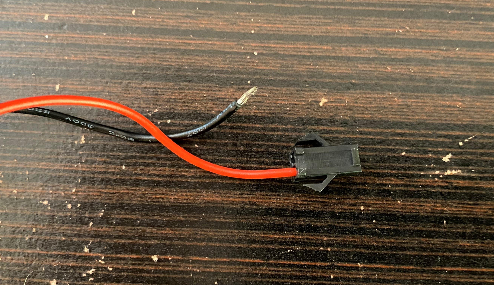
Part B: Odometry and Ground Truth in the Virtual Robot
The following code was written to test the .get_pose() and .get_gt_pose() functions.
# Use this data cell to test the member functions
od_pose = robot.get_pose()
gt_pose = robot.get_gt_pose()
print('Odometer pose = ({:.3f}, {:.3f}, {:.3f})\n'.format(od_pose[0], od_pose[1], od_pose[2]))
print('Ground truth pose = ({:.3f}, {:.3f}, {:.3f})\n'.format(gt_pose[0], gt_pose[1], gt_pose[2]))
The code below was used to plot trajectories based on odometry and ground truth.
def update_plot(robot):
# read odometer and plot
od_pose = robot.get_pose()
robot.send_to_plot(od_pose[0], od_pose[1], ODOM)
# read ground truth and plot
gt_pose = robot.get_gt_pose()
robot.send_to_plot(gt_pose[0], gt_pose[1], GT)
while 1: # infinite loop
update_plot(robot)
time.sleep(.5)# delay
Data was sent to the plotter every 0.5 seconds. This resulted in a reasonable amount of data being plotted so that the trajectory of the robot would be obvious, but not too many points would be plotted.
Plotting while the robot is driven around can be seen in the following video
The video shows that the odometry position is roughly similar to the ground truth position, but there is significant offset as well as significant noise and drift in the odometry position.
By having the robot follow a circular path for about three minutes, the following plot was obtained.
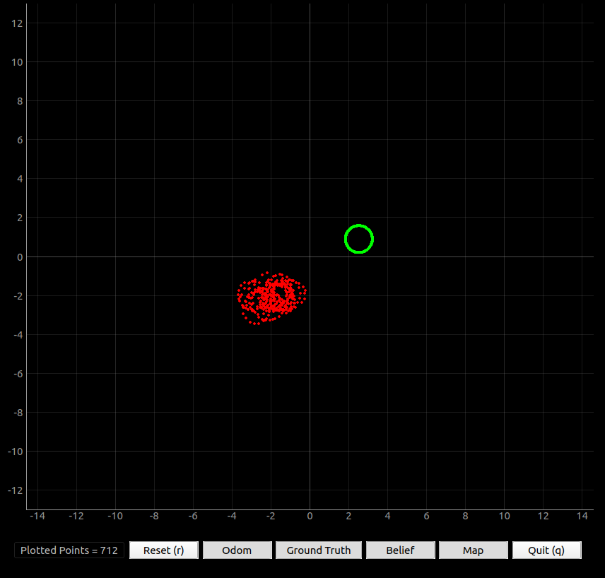
The ground truth points show a perfect circular pattern, but the odometer shows a noisy cloud of points.
When the robot was left stationary for some time the following plot was obtained.
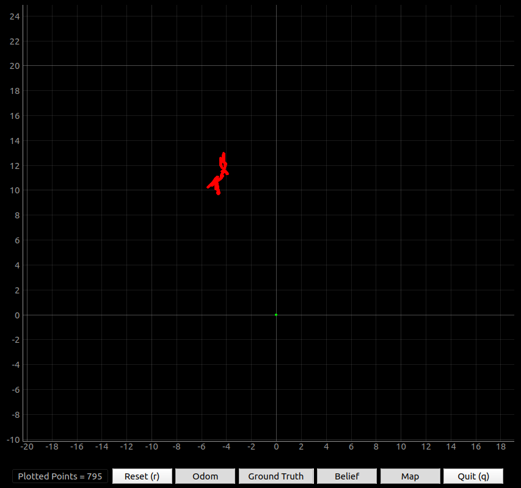
The ground truth point remains still, but the odometry position drifts and moves about significantly.
The robot was driven in a straight line at three different speeds to obtain the following results.
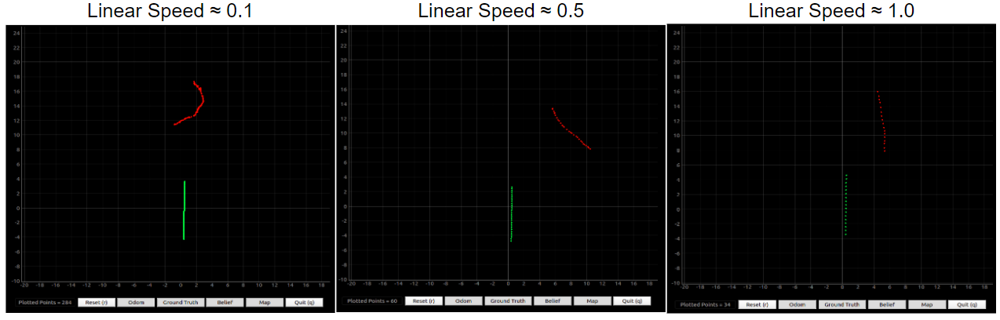
It can be seen that a higher speed results in a straighter line from the odometry reading. This is probably because the reading has less time to drift.